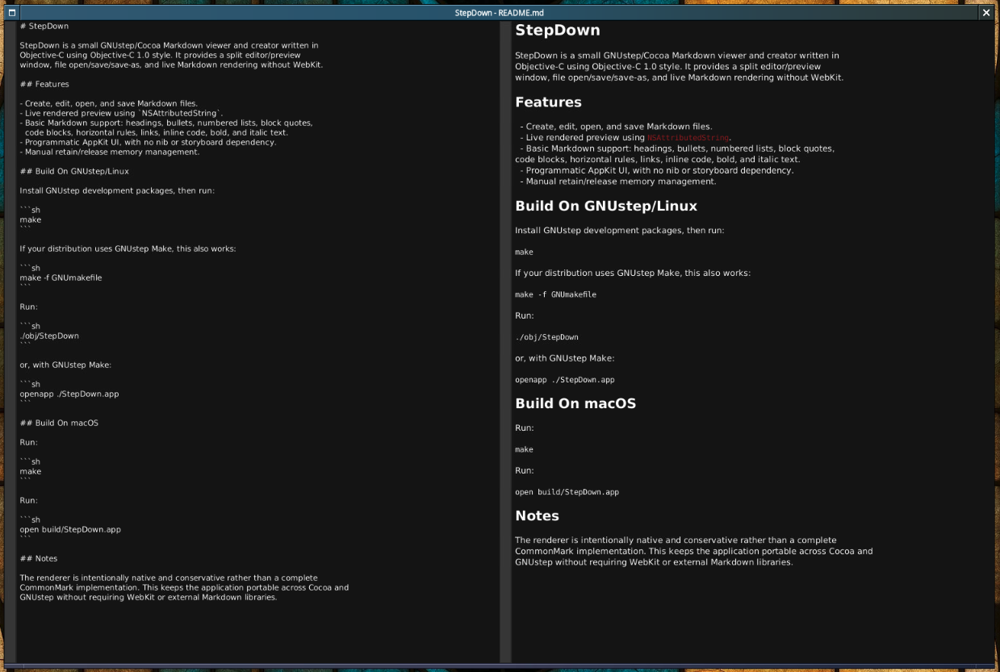

At home on the desktop.
Native interfaces built with GNUstep and AppKit. Practical applications that belong alongside the tools you already use.
A NEW CHAPTER FOR THE GNUSTEP DESKTOP
Native applications for GNUstep desktops.
A shared starting point for what comes next.
OBJECTIVE-C & APPKIT · SOURCE INCLUDED · MADE TO BUILD ON

REAL SOFTWARE. NATIVE WINDOWS. OPEN SOURCE.
01 / THE APPLICATIONS
From writing and coding to keeping an eye on your system.
Explore the collection, then make it your own.
40 application packages and six supporting libraries imported from GAP SVN trunk at repository revision 4317 on October 30, 2026. Original source, copyright notices, license files, and app-specific history are preserved. These are source imports; builds and compatibility have not been verified. Historical SVN branches and release tags are outside this import. Terminal’s upstream source is on its gap-svn branch.
Read each repository’s NU-GAP-IMPORT.md for provenance and dependency notes. View the import manifest ↗ · Download the collection clone script ↓ (preserves the original directory layout for relative dependency paths).
No projects match. Try another name or category.
02 / THE IDEA
The New GNUstep Application Project brings together desktop applications that GNUstep desktops can use, adapt, and build upon.
Explore the organization ↗Native interfaces built with GNUstep and AppKit. Practical applications that belong alongside the tools you already use.
Use an application, study how it works, or take it in a new direction. The source is the starting point.
Bring a fix, an idea, or a new application. Check each repository’s license and build requirements before adapting its code.
03 / TAKE THE NEXT STEP
Pick a project. Get it running. Make something useful.
Join us on GitHub ↗Browse the collection and open its source repository.
Set up GNUstep development tools and follow the app’s README. Requirements vary; some apps also support macOS.
Report an issue or propose a change in the relevant repository. Start small and build from there.